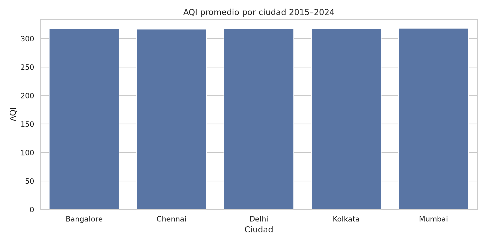
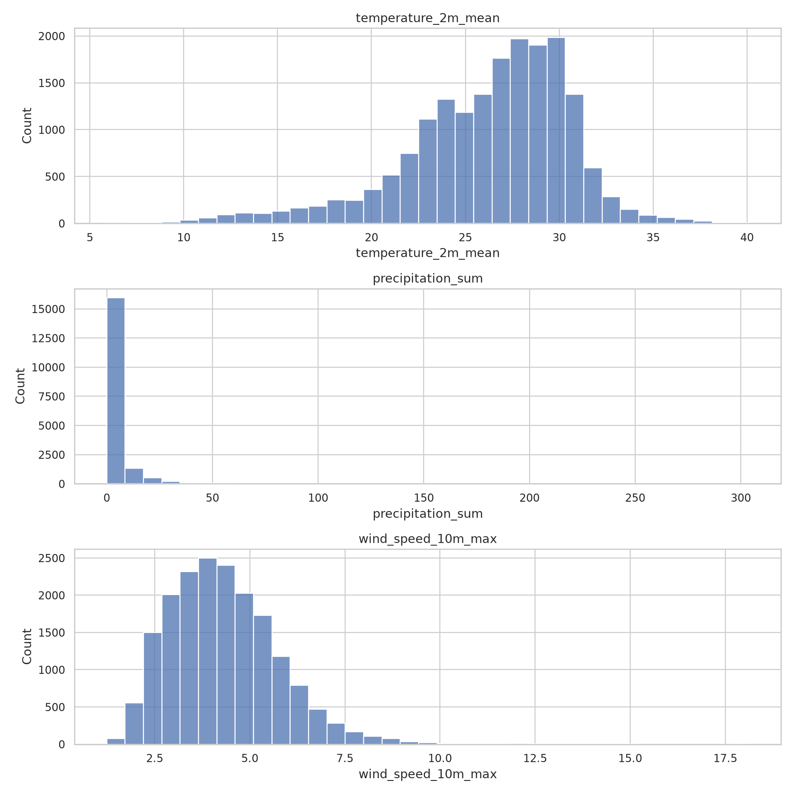
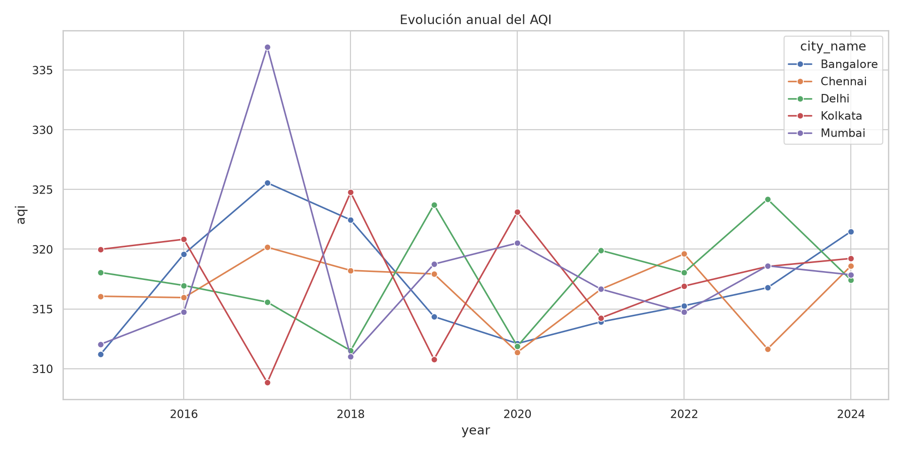
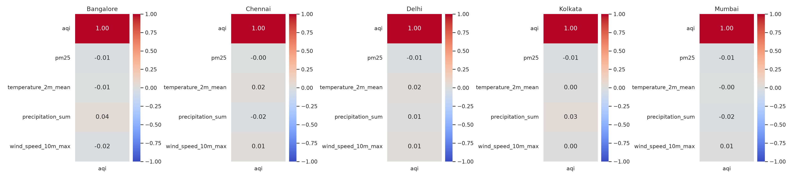

2015–2024 · 18,265 mediciones validadas · AQI promedio 317.51
Datos originales de Kaggle, coordenadas de Wikipedia y clima ERA5 de Open-Meteo. Las asociaciones no prueban causalidad. Las coordenadas ubican ciudades, no estaciones de medición.




| city_name | month | aqi | temperature_2m_mean | precipitation_sum | wind_speed_10m_max |
|---|---|---|---|---|---|
| Bangalore | 2015-01 | 318.177419 | 21.774194 | 0.187097 | 3.656129 |
| Bangalore | 2015-02 | 276.496429 | 23.360714 | 0.021429 | 4.067143 |
| Bangalore | 2015-03 | 326.780645 | 25.977419 | 0.367742 | 3.982258 |
| Bangalore | 2015-04 | 304.726667 | 26.250000 | 2.636667 | 3.081667 |
| Bangalore | 2015-05 | 282.929032 | 25.883871 | 5.096774 | 3.502581 |
| Bangalore | 2015-06 | 351.996667 | 24.293333 | 3.410000 | 5.954000 |
| Bangalore | 2015-07 | 286.816129 | 24.032258 | 2.990323 | 6.085484 |
| Bangalore | 2015-08 | 294.651613 | 23.796774 | 4.132258 | 5.204839 |
| Bangalore | 2015-09 | 331.583333 | 23.800000 | 4.563333 | 4.112000 |
| Bangalore | 2015-10 | 324.525806 | 23.925806 | 2.177419 | 3.451935 |
| Bangalore | 2015-11 | 320.583333 | 21.850000 | 11.943333 | 4.137000 |
| Bangalore | 2015-12 | 313.767742 | 21.854839 | 1.161290 | 3.969355 |
| Bangalore | 2016-01 | 328.096774 | 21.409677 | 0.080645 | 3.859677 |
| Bangalore | 2016-02 | 313.393103 | 24.193103 | 0.000000 | 3.950000 |
| Bangalore | 2016-03 | 332.151613 | 26.925806 | 0.035484 | 3.597097 |